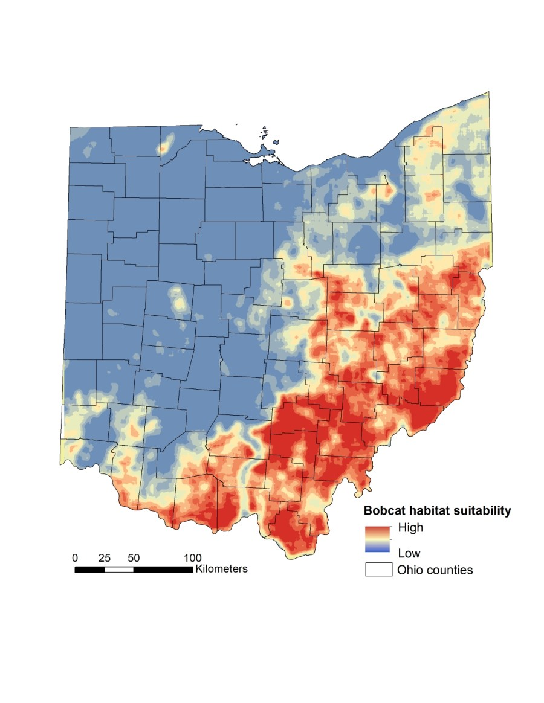
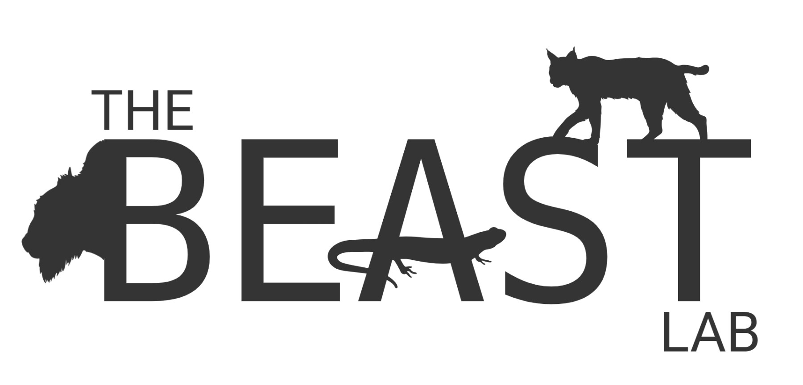
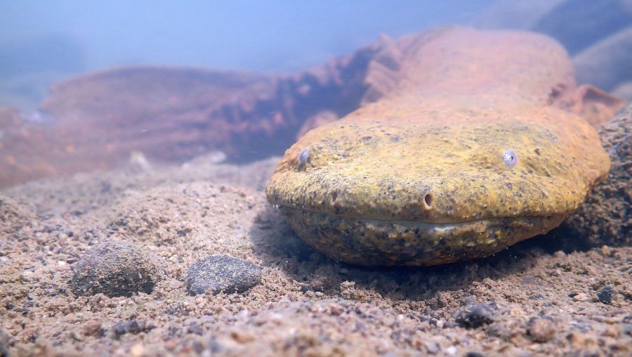
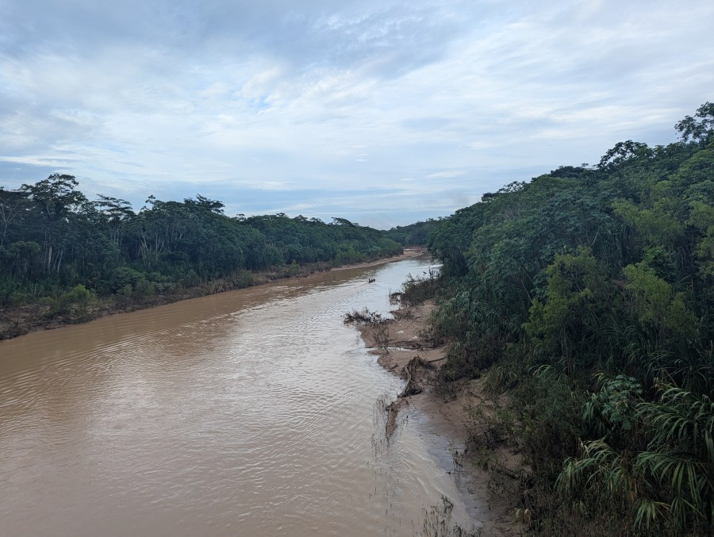
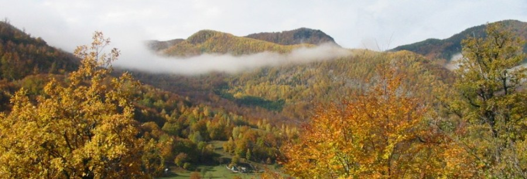
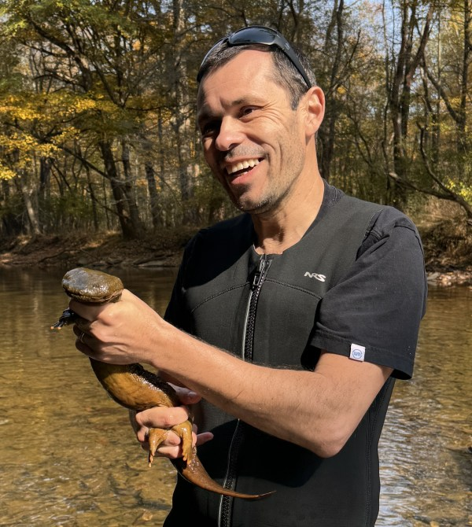
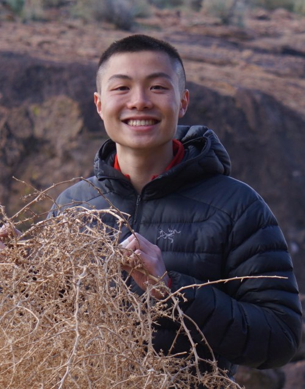
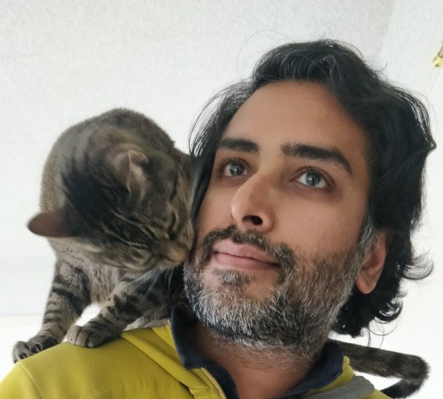
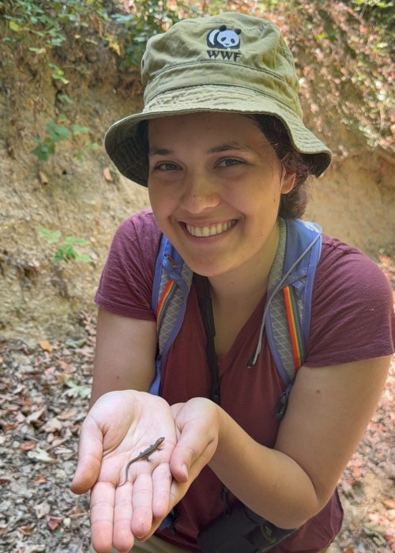
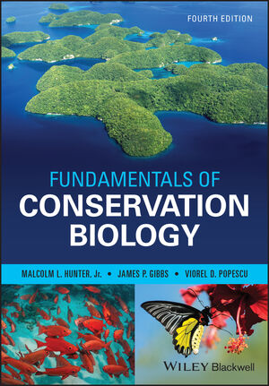

Carnivore ecology & coexistence
Brown bear management and human–wildlife conflict in Romania, the recovery of Ohio's bobcats, interactions within Carpathian mammal communities, and European bison rewilding.

The Biodiversity, Ecosystems and Animal Studies Team builds rapid, practical, evidence-based solutions to reverse biodiversity loss, from Carpathian bears to Appalachian hellbenders.
We tackle challenging biodiversity and conservation problems across many systems: Eastern US deciduous forests, British Columbia, the Romanian Carpathians, the Peruvian Amazon and Western China.
We work with management agencies, NGOs, industry and communities to deliver applied solutions to real-world conservation problems: overexploitation of wildlife, rapid biodiversity monitoring, trade-offs between renewable energy and biodiversity, endangered species recovery, and the effects of multiple stressors on sensitive amphibians.
How do human actions reshape animal–habitat relationships, from individual behaviour and physiology to populations and whole communities, and how do we turn that knowledge into resilient conservation plans?

Brown bear management and human–wildlife conflict in Romania, the recovery of Ohio's bobcats, interactions within Carpathian mammal communities, and European bison rewilding.

Eastern hellbender headstarting, nesting and paternal care; carryover effects of pesticides and drought on pond-breeding frogs; road ecology of turtles and snakes.

Rapid, scalable surveys with eDNA and leech iDNA, camera traps, drones and machine learning, analysed with hierarchical occupancy and abundance models.

Spatial prioritization under climate and land-use change, biodiversity trade-offs of renewable energy development, and evidence for Natura 2000 and wildlife policy.

A broadly trained ecologist and environmental scientist from Romania who accidentally fell into conservation biology and never looked back. I love herps and large carnivores, spend too much time doing stats, and enjoy teaching conservation and working alongside conservation practitioners.

Nest abandonment and filial cannibalism in Eastern Hellbenders. Cornell grad, turtle conservationist, rock climber.

AI and machine learning for large-mammal movement ecology. CTO of Voices for Asian Elephants and 15 years a software engineer.

Meta-analysis of genetic abundance estimation in brown and black bears.
Sustainable Development.
Undergraduate researcher.
Lab members are marked with *. Search by species, place, journal or co-author.

Hunter, M.L., J.P. Gibbs & V.D. Popescu · Wiley
Publisher page · Download all references (.RIS)Book chapters in Reptile Ecology and Conservation (OUP 2016), Amphibian Ecology and Conservation (OUP 2009), Conserving Wildlife Populations in a Changing Climate (Chicago 2012) and Problem-Solving in Conservation Biology (Blackwell 2007).
Editorial roles: Associate Editor, Conservation Science and Practice · Senior Editor, Scientific Reports · Editor, Integrative Conservation
New papers on translocated European bison in Ecosphere (Lucy Holland), hellbender nest boxes as a density tool in Aquatic Conservation (Dani Pergola), and a dispatch in Current Biology.
Welcome to new E3B MA students Matt Huang and Luveen Wadhwani!
A new Letter in Science on lethal brown bear management in Romania, continuing 10+ years of pushing for evidence-based carnivore policy (see also 2019 and 2021).
Fieldwork in Madre de Dios, Peruvian Amazon: ecotourism sustainability in Tambopata and camera-trap biodiversity surveys near Iñapari.
Three new MA students (Arel Triyono, Adrian Casanova, Hannah Hess). Dani, Henry and Jared present at TWS 2024 in Baltimore and the AMNH Student Conference on Conservation Science.
Lucy Holland becomes our first Columbia graduate, after bison fieldwork in Romania and a poster at ECCB 2024 in Bologna.
The lab moves from Ohio University to Columbia E3B in New York City.
I am recruiting Master's students through the Columbia E3B MA in Ecology, Evolution and Conservation Biology. Core directions are amphibian ecology, carnivore ecology and spatial conservation planning, and students are welcome to develop their own conservation projects.
PhD applicants: I am happy to serve on committees; admission to the E3B PhD program goes through an E3B core faculty member.
We collaborate with agencies, NGOs, industry and researchers on applied conservation problems. Get in touch if you'd like to work together.